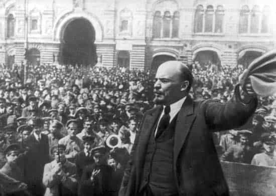
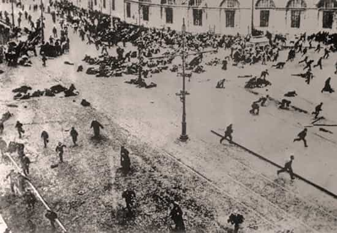

Erik worked in the corporate world for 10 years before quitting his job to ravage Southeast Asia. He is obsessed with history because it tells us everything we need to know about the present and the future.


Congratulations gentlemen, after much ridicule, vitriolic leftist rhetoric, and subversion attempts we have prevailed. Donald Trump is the right man to lead the country at the right time when it is really and truly divided and hurt.
However we must stay vigilant because the Democrats and the left will be back after they lick their wounds and learn their lessons. It may take them 1 election cycle or an entire decade to field a suitable candidate, but the pendulum will swing back in their favor eventually. Once all all the post-election shock dies down, the liberal establishment will accept the fact that they lost fair and square and put their hopes into the wrong group of people.
The journey to this realization and the steps necessary to fix it will take some real effort and they probably won’t get it right the first time around. In the immediate aftermath of the election cycle I think the Democrats will still cling to their support base of feminists, SJWs, and all the other bottom feeders, but they will eventually realize that their useful idiots are the reason they alienated so many people and turned others into closet Donald Trump supporters. In other words they put their faith into the wrong people at the expense of alienating the white working class and even some minorities and legal immigrants.
To put some historical context into this, let’s go back in time to the early 20th century right around the time when the Russian Revolution was happening. Lenin, Trotsky, and their merry band of Bolsheviks were working hard to destabilize and discredit the rotting Russian monarchy. In many ways they were pioneers of Marxist propaganda tactics that modern day leftists have adopted so effectively. In their effort to spark the revolution the gloves came off and they fought dirty. All the disenchanted classes and intelligentsia were mobilized to attack the government. In their ranks they included the original SJWs, though to be fair they probably weren’t whiny entitled brats back then.

After the revolution succeeded, half the Bolsheviks wanted to keep pushing for a global revolution because nothing was enough for them, but the other half wanted to take a breather to the put the country back together. The half that wanted a break to stabilize won out courtesy of Stalin when he ruthlessly cut down the extreme wing of the party. He then went on to immediately wipe out the useful idiots who were used to stir up the revolution and focused on bringing the country back from the Stone Age. Trotsky got an ice pick in the skull for not shutting up.
Though not exactly a match for today’s situation, we can still draw some parallels. Some credit has to go to the left for bringing some important issues to the table. Even though we can agree that the Democrats have done some serious damage, we can also be intelligent enough to look back on the presidencies of Clinton and Obama and pick out some good accomplishments. Once they accomplished their goals of creating an “equal society” they found themselves directionless and that’s when we started seeing the ever more ridiculous and shrill calls for continued revolution. It manifested itself into what we see today as safe spaces, gender binaries, and all the other confusion plaguing society.
The American people were never given the time to absorb and digest all the leftists victories because they came in rapid succession. Gay marriage, LGBTQ, BLM, multiculturalism, refugees, SJWs, and all the other social movements that sprang up happened so quickly and were given preference over the white working class. Not only that, but not accepting it was met with a disdainful and aggressive attitude that reeked of condescension.
Trump is the necessary force to put a stop to all the excessive leftist nonsense because any more and we could truly have been on the brink of violent conflict. Hopefully with him in power we will finally get a breather and a long needed break from the progressive left that has had a virtual monopoly due to limp opposition from the right. While I don’t suggest to equate him to Stalin, he does possess a lot of the same characteristics such as an iron resolve and a mastodonic pair of testicles.
I hope that in the next couple of years we will see an era of the Great Forgetting where all the loudmouth feminists, SJWs, and other far left elements slowly lose favor and fade into the background. In the Russian Revolution they were all either shot or sent to far away Siberian camps to do hard labor. Of course in 2016 we can’t do that, but I have hope that market forces will do the next best thing and cause them to keep quiet and actually get a job.

It will be a painful process and they won’t come quietly, but I believe that we will slowly see them getting phased out until they lose their platform. All the protests and petitions to ban the electoral college are going to become a PR problem for the Democrats once the dust settles and they will begin the process of disassociating themselves with the subversive elements. All the women and men they managed to corrupt will unfortunately become collateral damage as some are too far gone to bring back. I genuinely feel sorry for them because they were used for nefarious political purposes as cannon fodder. We will unfortunately see a whole generation of bitter spinsters and emasculated men as one of the consequences of long Democratic rule.
I see in the next 10-20 years America reverting back to simpler times and the anti-white rhetoric turning down many decibels. We may even see American women becoming more feminine once it become apparent that the government no longer favors feminism. The white working class needs to be given a voice to grieve all the unfair treatment they have been receiving for the last years. We need to be given time to make sense of everything that has happened around us.
We should take the time to celebrate this victory because we all fought hard for it. However we must not get complacent because the election result shows exactly what happens when you do. Just because The Donald is now the new President doesn’t mean that all the leftist will suddenly get with the program.
In the immediate aftermath we must still be aware that the legacy of the leftists is strong and the legal barriers they built are still there. In other words your tongue and your actions can still get you in trouble as seen by the poor white guy who got jumped by a bunch of black guys for voting for Trump. Keep your wits about you and be careful who you trust. It will take time to undo all the subversive damage and you can expect them to come kicking and screaming. I don’t believe we are going to stop seeing false rape accusations anytime soon.
Another thing to keep in mind is that the Democrats will be back. As I said earlier it will take time and they will go through a crisis, but eventually they will find strong leadership. They will learn the lessons and they will not be so careless anymore about who to put their faith into. I see them weaseling their way into appealing to the white demographic because this election proved they were the crux. Their message will be revised and they will pull voters back their way eventually. In order to do this they will not push such an aggressive Globalist agenda down people’s throats, but they will not abandon their dream altogether.
In the near future I see a Globalism 2.0 appearing that is much more inclusive and fair to the white working class, as well as the world in general. As humans we have always moved towards a more globalized society and all the bumps along the road have never kept us down for long. A more globalized society is inevitable, just the current way of going about it is not correct. The left will find a better mix in the future and people will buy it and support it.
To push Globalism 2.0 they will revive their army of SJWs, though in 10-20 years I can’t imagine what they will look like. The current generation of far left militia will move into the shadow realms much like the ones from where the Manosphere and PUA culture originated from and they will wait patiently for their day again just like we did.
Everything comes in waves and movements fade and come back. The militant leftism from the 60s was revived 40 years later and is now nearing yet another culmination. I don’t think anybody here likes them, but I don’t think we can deny that they aren’t effective when used correctly. So just be aware of that and realize that the enemy has only made a tactical retreat.
Now go out there and grab America by the pussy!
Read More: How To Live After Trump